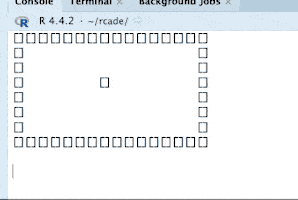
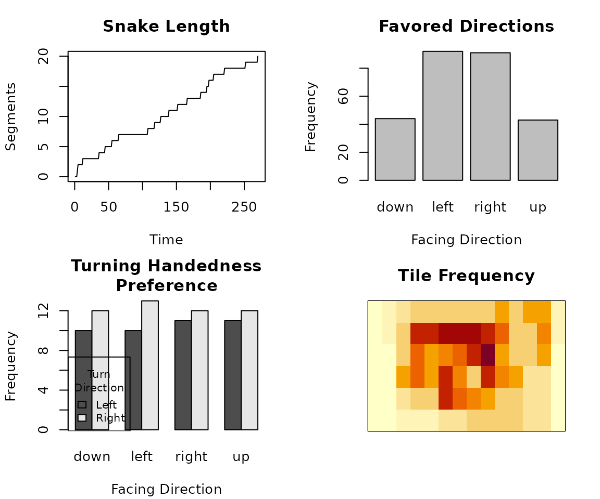

Snake Devlog
snake.RmdThis article goes through the full process of making and testing the
Snake ROM. Snake is a good game to demonstrate the basic
input and gamelogic functionality of the package, and it doesn’t require
fancy graphics; graphical capabilities are explored in
vignette("rcade.super_rrio").
1. Engine Structure
A ROM is an object (list) made with rom.init() that the
package can use to play a game. A ROM contains all the static
data of the game— game logic, sprites, and so on. This is what we’re
building in this article.
Once you have a ROM, you play it by making a RAM object—which stores
all the dynamic data for the game—and running it with
ram.run(). This runs the game code from the ROM, which
references and writes to variables in the RAM. You’ll see that most of
the game code in this article works with the RAM.
vignette("rcade.guide") provides an overview of this
process for playing games, and vignette("rcade.engine")
describes the ROM/RAM in a little more detail.
2. Setup
Before we start, we have to make some decisions about how the game will work.
- The snake will be controlled with WASD, since R can’t capture arrow key presses.
- The speed of the snake will be determined by the game’s framerate, since there’s no point to drawing it any faster than that.
- We’ll use an arbitrary game area of 16x8 for now, and change it later.
2.1 ROM Initialization
To start, we create the ROM object.
There’s more we can add with this function (rom.init()),
but this is all we need for now; we’ll add additional properties to the
object throughout the article.
So far, we’ve:
- set game area to 16x8
- set framerate to 2 frames per second
- created a single sprite called “pixel” which is a 1x1 pixel
And the game automatically uses the default WASD controls:1
#Snake$keybinds = c(w = 'up', a = 'left', s = 'down', d = 'right')3. Moving the Snake
The first step is to make the snake head object, which is what the player controls.
3.1 Initialization
We’ll initialize this object in Snake$startup, which
runs once when the RAM is initialized. This is where we want to create
objects that will be used later— it’s like the top of a code file.
The snake (head object) starts at the center of the
screen and has the direction ‘neutral’ to indicate it hasn’t started
moving yet.
3.2 Control
We’ll control the snakehead by changing its $direction.
We can do this by checking RAM$actions for player-input
directions, and setting head$direction if a new valid
direction has been input.
We want this code to run every tick in Snake$custom(),
but instead of cluttering that function, we can make a new function and
call it in Snake$custom(). We can’t just define this new
function in the basic R environment— the RAM would have no way to access
it in its environment. So instead we make it a part of the ROM. Then,
the RAM can run it with RAM$ROM$set_direction(), since the
RAM has access to a copy of ROM.
Snake$set_direction = function(RAM){
#name of the actions pressed on this tick, or NULL
actions = names(RAM$actions)[which(RAM$actions == TRUE)]
#print the direction so we know it's working
RAM$echo = paste(actions,collapse = ' ')
#set head direction
if (length(actions)) RAM$objects$head$direction = actions[[1]]
return(RAM)
}3.3 Movement
Now we move the head based on its direction.
Snake$move_head = function(RAM){
head = RAM$objects$head #for typing convenience
print(head)
#convert direction name to x and y
direction = list(
'neutral' = c(0,0),
'left'= c(-1,0),
'right' = c(1,0),
'up' = c(0,-1),
'down' = c(0,1)
)[[head$direction]]
head$x = head$x + direction[1]
head$y = head$y + direction[2]
RAM$objects$head = head #push changes
return(RAM)
}3.4 Testing
Putting this all together, we already have a working prototype where we can control the head!
FULL CODE SO FAR:
Snake = rom.init(16,8,framerate=2,sprites=list(pixel=matrix(1)))
#define helper functions (see preceding sections)
Snake$set_direction = function...
Snake$move_head = function...
Snake$startup = function(RAM){
RAM$objects$head = list(
x = floor(RAM$ROM$screen.width / 2),
y = floor(RAM$ROM$screen.height / 2),
spritename = 'pixel',
direction = 'neutral'
)
return(RAM)
}
Snake$custom = function(RAM){
RAM = RAM$ROM$set_direction(RAM)
RAM = RAM$ROM$move_head(RAM)
return(RAM)
}
RAM = ram.init(Snake) #initialize RAM
RAM = ram.run(RAM) #run game with RAM
4. Border
Next, let’s make a nice border for the game so we know where the play
area ends. We can do this by generating a sprite in
Snake$startup: We want to make the sprite dynamically like
this so that the game can be played at different resolutions— if we
hard-coded a sprite, it wouldn’t always fit!
Snake$make_border = function(RAM){
#make border sprite
box = matrix(1,RAM$ROM$screen.height,RAM$ROM$screen.width)
box[2:(nrow(box) - 1), 2:(ncol(box) - 1)] = 2
#push this sprite to ROM$sprites
RAM$ROM$sprites$border = box
#make object to display sprite
RAM$objects$border = list(spritename='border')
return(RAM)
}#> [][][][][][][][][][][][][][][][]
#> [] []
#> [] []
#> [] [] []
#> [] []
#> [] []
#> [] []
#> [][][][][][][][][][][][][][][][]5. Segments
Time to add the segments of the snake. There’s a simple trick to avoid having to keep track of the whole snake at once:
- Every tick, the snake head moves to a new tile.
- Spawn a segment on the empty tile the head just left.
- Delete the oldest segment to have spawned, unless an apple was eaten this tick.
This produces exactly the behavior we want, since the “tail” of the snake always corresponds to the oldest segment.
5.1 Spawn Segment
New segments are spawned each frame in Snake$custom
before moving the head:
We use ram.new_object() to add nameless objects to
RAM$objects.
Snake$spawn_segment = function(RAM){
#spawn new tail segment
RAM = ram.new_object(RAM, list(
x = RAM$objects$head$x,
y = RAM$objects$head$y,
#used to find which objects are tail objects
is_segment = TRUE,
#tick on which this segment spawned
time_created = RAM$ticks,
spritename = 'pixel'
))
return(RAM)
}5.2 Remove Tail
Then we can loop through the objects, find the oldest segment, and remove it.
Snake$remove_tail = function(RAM){
oldest_time = Inf
oldest_index = NULL
for (i in 1:length(RAM$objects)){
obj = RAM$objects[[i]]
if (!is.null(obj$is_segment)){ #obj has $is_segment property
if (obj$time_created < oldest_time){ #object is oldest so far
oldest_time = obj$time_created
oldest_index = i
}
}
}
#remove oldest segment
RAM$objects = RAM$objects[-oldest_index]
return(RAM)
}WARNING: Because of how R handles nested objects,
RAM$objects always has to be iterated by
for (i in 1:length(RAM$objects)). Attempting
for (obj in RAM$objects) will NOT work.
5.3 Testing
To test the segments, we’ll have to make code for the snake to grow. The snake will grow any time we don’t delete the tail segment, so let’s prevent that code from running every, say, 5 ticks. Let’s also speed up the game a little so it’s easier to test.
FULL CODE SO FAR:
Snake = rom.init(16,8,framerate=5,sprites=list(pixel=matrix(1)))
#helper functions from before
Snake$set_direction = function...
Snake$move_head = function...
Snake$make_border = function...
Snake$spawn_segment = function...
Snake$remove_tail = function...
Snake$startup = function(RAM){
#make border
RAM = RAM$ROM$make_border(RAM)
#make head
RAM$objects$head = list(
x = floor(RAM$ROM$screen.width / 2),
y = floor(RAM$ROM$screen.height / 2),
spritename = 'pixel',
direction = 'neutral'
)
return(RAM)
}
Snake$custom = function(RAM){
#only do segment stuff once the snake starts moving
if (RAM$objects$head$direction != 'neutral'){
RAM = RAM$ROM$spawn_segment(RAM)
#skip this every fifth tick to grow the snake
if (RAM$ticks %% 5 != 0) RAM = RAM$ROM$remove_tail(RAM)
}
#move snake
RAM = RAM$ROM$set_direction(RAM)
RAM = RAM$ROM$move_head(RAM)
return(RAM)
}
quickload(Snake)
5.4 quickload()
As per vignette("engine"), the ‘correct’ way of using a
ROM is to initialize the RAM with ram.init() and then run
it with ram.run() (as we did in section 3.4). This gets
inconvenient after a while, so I made the wrapper function
quickload() that does both of these automatically. The
manual method is still useful when you need more control over the RAM or
want to rename the RAM object.
All this does is execute those two functions in the environment
quickload() is called in, as if you had typed the two lines
yourself:
RAM = ram.init(ROM)
RAM = ram.run(RAM)6. Debugging
For the sake of demonstration, I’m going to introduce a difficult bug and walk through the debugging process for it.
Let’s say I had accidentally mistyped a line in
Snake$remove_tail like this:
RAM$objects = RAM$objects[oldest_index] This accidentally deletes every object except the snake’s tail. But
can we figure that out from the code? Now I get this error message when
the snake starts moving: (see ?ram.help for more details on
this message)
Traceback:
[[1]]
if (!RAM$paused) RAM = ram.tick(RAM)
[[2]]
RAM = RAM$ROM$custom(RAM)
[[3]]
RAM = RAM$ROM$move_head(RAM)
Call:
list(neutral = c(0, 0), left = c(-1, 0), right = c(1, 0), up = c(0,
-1), down = c(0, 1))[[head$direction]]
Error:
attempt to select less than one element in get1indexIt looks like this list isn’t being keyed properly.
6.1 Printing
If we put any print() calls in the game code, we’ll only
see them when the game crashes; normally, they’d be hidden when the
console is wiped every frame. This is very useful for debugging.
As a reminder, if you want something that you can see during
gameplay, the value(s) of RAM$echo are printed below the
game each frame.
So let’s try using this to figure out what’s going on in that list
call. The traceback tells us the error is occurring in
Snake$move_head(), so let’s try adding
print(head$direction) right before the line that
crashes.
NULL
Traceback:
[[1]]...It printed NULL, so it seems the head doesn’t exist at the moment. That’s as much info as we’re going to get; this is one of the tougher bugs2 that doesn’t tell us exactly where it’s happening.
Knowing that RAM$objects$head is getting deleted
somewhere, the best we can do is look through the code at every line
where we change RAM$objects or
RAM$objects$head. There’s not too many of those at the
moment, so hopefully we notice the incorrect line and can correct
it.
7. Game End
With that fixed, back to developing the game.
It’s time to check for when the player loses. This is fairly simple— we just have to see if the snake head is out of bounds (hit the wall) or overlapping a segment (hit itself).
We’ll make another function to help check for that overlap. (We’ll also be reusing this function to see when the Snake touches an apple!)
#returns true if both objects are at the same coordinates
Snake$overlap = function(obj1, obj2){
if (obj1$x == obj2$x && obj1$y == obj2$y) return(TRUE)
else return(FALSE)
}Now we can check for collisions like so:
Snake$check_game_end = function(RAM){
end_game = FALSE
#out of bounds
if (
RAM$objects$head$x < 2 ||
RAM$objects$head$x > RAM$ROM$screen.width - 1 ||
RAM$objects$head$y < 2 ||
RAM$objects$head$y > RAM$ROM$screen.height - 1
) end_game = TRUE
#check overlap with segment
#using the same loop from Snake$remove_segment to iterate over the segments
for (i in 1:length(RAM$objects)){
obj = RAM$objects[[i]]
if (!is.null(obj$is_segment)){
if (RAM$ROM$overlap(RAM$objects$head, obj)) end_game = TRUE
}
}
#stop the game when you lose
if (end_game) RAM$ROM$end_game(RAM)
return(RAM)
}
Snake$end_game = function(RAM){
cat('Game over!')
ram.end() #stops the game
}8. Apple
8.1 Initialization
First we have to make the Apple object in Snake$startup.
All it needs is coordinates and a sprite!
8.2 Logic
The game logic for the apple should be this:
- Spawn the apple somewhere empty.
- If the apple is eaten (overlaps the snake head), grow the Snake (suppress tail removal).
- Repeat.
We’ll do that like this in Snake$custom:
if (RAM$ROM$overlap(RAM$objects$head,RAM$objects$apple)){
RAM = RAM$ROM$eat_apple(RAM) #eat apple
} else {
RAM = RAM$ROM$remove_tail(RAM)
}And now we have to define Snake$eat_apple. All this has
to do is move the apple to a new, unoccupied location.
#moves the apple
Snake$eat_apple = function(RAM){
valid = FALSE #is the apple in a valid location?
#loop until the apple is in a valid (unoccupied) location
while (!valid){
valid = TRUE
#new random location
RAM$objects$apple$x = sample(2:(RAM$ROM$screen.width - 1),1)
RAM$objects$apple$y = sample(2:(RAM$ROM$screen.height - 1),1)
#overlapping anything? check all the segments again
for (i in 1:length(RAM$objects)){
obj = RAM$objects[[i]]
if (!is.null(obj$is_tail)){
if (RAM$ROM$overlap(RAM$objects$apple,obj)) {
#overlaps something, break out and try again with a new location
valid = FALSE
break
}
}
}
}
return(RAM)
}Later we’ll put in a little code to check if the player has filled
the area and won, since that would hang this while
loop.
8.3 Testing
Now our code looks like this:
FULL CODE SO FAR:
Snake = rom.init(16,8,framerate=5,sprites=list(pixel=matrix(1)))
#helper functions from before
Snake$set_direction = function...
Snake$move_head = function...
Snake$make_border = function...
Snake$spawn_segment = function...
Snake$remove_tail = function...
Snake$eat_apple = function...
Snake$check_game_end = function...
Snake$end_game = function...
Snake$startup = function(RAM){
#make border
RAM = RAM$ROM$make_border(RAM)
#make head
RAM$objects$head = list(
x = floor(RAM$ROM$screen.width / 2),
y = floor(RAM$ROM$screen.height / 2),
spritename = 'pixel',
direction = 'neutral'
)
#make apple
RAM$objects$apple = list(
x = sample(2:(RAM$ROM$screen.width - 1),1), #random location
y = sample(2:(RAM$ROM$screen.height - 1),1),
spritename = 'pixel'
)
return(RAM)
}
Snake$custom = function(RAM){
#only do segment stuff once the snake starts moving
if (RAM$objects$head$direction != 'neutral'){
RAM = RAM$ROM$spawn_segment(RAM)
#eat apple or remove tail
if (RAM$ROM$overlap(RAM$objects$head,RAM$objects$apple)){
RAM$echo = 'Apple Eaten' #print this so we know it works
RAM = RAM$ROM$eat_apple(RAM) #eat apple
} else {
RAM = RAM$ROM$remove_tail(RAM)
}
}
#move snake
RAM = RAM$ROM$set_direction(RAM)
RAM = RAM$ROM$move_head(RAM)
#check for game end
RAM = RAM$ROM$check_game_end(RAM)
return(RAM)
}
quickload(Snake)
9. Polish
Time for a bunch of cleanup and QoL.
9.1 U-Turn Prevention
Currently, there’s nothing stopping you from going back in the
direction you just came from, which would make you instantly collide and
lose. We can add a check in Snake$set_direction() to
prevent this:
Snake$set_direction = function(RAM){
#name of the actions pressed on this tick, or NULL
actions = names(RAM$actions)[which(RAM$actions == TRUE)]
#set head direction
if (length(actions)) {
action = actions[[1]]
if (action != c( #forbidden direction combos
neutral = '', #can do any direction from neutral
left = 'right',
right = 'left',
up = 'down',
down = 'up'
)[RAM$objects$head$direction]
){
RAM$objects$head$direction = action
}
}
return(RAM)
}I’ve also gotten rid of the action echo, since we’re confident it works at this point.
9.2 Counting Segments and Survival
It would be neat to display some stats about the game when it ends,
like how big the snake is and how long you survived for. We can record
the snake length by incrementing a counter, RAM$segments,
in Snake$add_segment(), and decrementing it in
Snake$remove_segment.
Snake$spawn_segment = function(RAM){
RAM$segments = RAM$segments + 1 #increment segments
#spawn new tail segment
RAM = ram.new_object(RAM, list(
x = RAM$objects$head$x,
y = RAM$objects$head$y,
#used to find which objects are tail objects
is_segment = TRUE,
#tick on which this segment spawned
time_created = RAM$ticks,
spritename = 'pixel'
))
return(RAM)
}
Snake$remove_tail = function(RAM){
RAM$segments = RAM$segments - 1 #decrement segments
oldest_time = Inf
oldest_index = NULL
for (i in 1:length(RAM$objects)){
obj = RAM$objects[[i]]
if (!is.null(obj$is_segment)){ #obj has $is_segment property
if (obj$time_created < oldest_time){ #object is oldest so far
oldest_time = obj$time_created
oldest_index = i
}
}
}
#remove oldest segment
RAM$objects = RAM$objects[-oldest_index]
return(RAM)
}Similarly, we can track the number of ticks survived by incrementing
a counter every tick once the player starts moving, in
Snake$custom().
RAM$ticks_survived = RAM$ticks_survived + 1We just have to initialize both counters in
Snake$startup() like so:
RAM$segments = 0
RAM$ticks_survived = 0And we can add these variables to the Game Over message:
Snake$end_game = function(RAM){
cat('Game over! Size: ',
RAM$segments,
'. Time survived: ',
RAM$ticks_survived,
'.',
sep='')
ram.end() #stops the game
}We also want to make a check for when the player has completely
filled the space with the snake, to prevent that while loop from earlier
from hanging. We can do this by adding a check at the beginning of
Snake$eat_apple():
Snake$eat_apple = function(RAM){
# check for game win
if (RAM$segments > (RAM$ROM$screen.width - 2) * (RAM$ROM$screen.height - 2)){
cat('You win!')
RAM = RAM$ROM$end_game(RAM)
}
valid = FALSE #is the apple in a valid location?
#loop until the apple is in a valid (unoccupied) location
while (!valid){
valid = TRUE
#new random location
RAM$objects$apple$x = sample(2:(RAM$ROM$screen.width - 1),1)
RAM$objects$apple$y = sample(2:(RAM$ROM$screen.height - 1),1)
#overlapping anything? check all the segments again
for (i in 1:length(RAM$objects)){
obj = RAM$objects[[i]]
if (!is.null(obj$is_tail)){
if (RAM$ROM$overlap(RAM$objects$apple,obj)) {
#overlaps something, break out and try again with a new location
valid = FALSE
break
}
}
}
}
return(RAM)
}This will end the game before the while loop has a chance to start.
9.3 Starting Segments
It’s nice to start with a few segments. We can do this by suppressing
Snake$remove_tail() in Snake$custom() until
the desired amount of segments is reached, which we’ll define with
RAM$starting_segments.
if (RAM$segments > RAM$starting_segments) RAM = RAM$ROM$remove_tail(RAM)And RAM$starting_segments also has to be initialized in
Snake$startup(). I’ve set it to a default of 10 to skip the
boring part of the game.
9.4 Difficulty Choice
Snake is much harder at different speeds and bounding regions— let’s
give the player the choice to define their own.
We can do this by putting readline() in
Snake$startup, which will prompt the player during
ram.init().
So this function will go in Snake$starup(),
before we generate the border with
Snake$make_border(). It asks the player if they want to
change the settings from the default, and if so, gives them three
prompts to enter custom settings.
Snake$set_difficulty = function(RAM){
use_defaults = readline('Use default game settings? y/n ')
if (use_defaults == 'n'){
desired_framerate = as.integer(readline(paste(
"How FAST should the game be? ",
"Input an integer or leave blank for default.",
"2: Easy",
"5: Default",
"10: Hard",
''
,sep='\n')))
desired_width = as.integer(readline(paste(
"How WIDE should the game area be? ",
"Input an integer or leave blank for default.",
"Default: 32",
''
,sep='\n')))
desired_height = as.integer(readline(paste(
"How TALL should the game area be? ",
"Input an integer or leave blank for default.",
"Default: 16",
''
,sep='\n')))
desired_segments = as.integer(readline(paste(
"How LONG should the snake start at? ",
"Input an integer or leave blank for default.",
"Default: 0",
''
,sep='\n')))
#default if blank or nonnumber
if (!is.na(desired_framerate)) RAM$ROM$framerate = desired_framerate
if (!is.na(desired_width)) RAM$ROM$screen.width = desired_width
if (!is.na(desired_height)) RAM$ROM$screen.height = desired_height
if (!is.na(desired_segments)) RAM$starting_segments = desired_segments
}
return(RAM)
}I’m also changing the defaults of the final ROM to 32x16 @ 5fps. We
had it smaller before for ease of testing.
For the framerate: 5fps is a nice, mildly challenging pace, 2 gives
plenty of time to think, and 10 is rather intense and breakneck,
especially as the snake gets long.
10. Game Demo
Here’s the (almost) final code for the Snake ROM, and a
GIF of a complete game session.
FULL CODE SO FAR:
Snake = rom.init(32,16,framerate=5,sprites=list(pixel=matrix(1)))
#helper functions from before
Snake$set_direction = function...
Snake$move_head = function...
Snake$make_border = function...
Snake$spawn_segment = function...
Snake$remove_tail = function...
Snake$eat_apple = function...
Snake$check_game_end = function...
Snake$end_game = function...
Snake$set_difficulty = function...
Snake$startup = function(RAM){
RAM$starting_segments = 10
#set difficulty
RAM = RAM$ROM$set_difficulty(RAM)
#make border
RAM = RAM$ROM$make_border(RAM)
#make head
RAM$objects$head = list(
x = floor(RAM$ROM$screen.width / 2),
y = floor(RAM$ROM$screen.height / 2),
spritename = 'pixel',
direction = 'neutral'
)
#make apple
RAM$objects$apple = list(
x = sample(2:(RAM$ROM$screen.width - 1),1), #random location
y = sample(2:(RAM$ROM$screen.height - 1),1),
spritename = 'pixel'
)
RAM$segments = 0
RAM$ticks_survived = 0
RAM$data = list(x = numeric(0), y = numeric(0), direction = character(0), segments = numeric(0))
return(RAM)
}
Snake$custom = function(RAM){
#only do segment stuff once the snake starts moving
if (RAM$objects$head$direction != 'neutral'){
RAM = RAM$ROM$spawn_segment(RAM)
RAM$ticks_survived = RAM$ticks_survived + 1
#eat apple or remove tail
if (RAM$ROM$overlap(RAM$objects$head,RAM$objects$apple)){
RAM = RAM$ROM$eat_apple(RAM) #eat apple
}
else if (RAM$segments > RAM$starting_segments) {
RAM = RAM$ROM$remove_tail(RAM)
}
#once the starting number of segments has been reached, start removing the tail
}
#move snake
RAM = RAM$ROM$set_direction(RAM)
RAM = RAM$ROM$move_head(RAM)
#check for game end
RAM = RAM$ROM$check_game_end(RAM)
return(RAM)
}
quickload(Snake)
You can see me:
- create the RAM with
ram.init() - start running the game with
ram.run() - pull up the listener session
- start recording and inputting inputs with
inputs.listen()
11. Advanced Data Collection
In the spirit of R, why not make some pretty graphs? It should be trivial to record some basic data on each tick and process it when the game is over.
We’ll initialize the variables in Snake$startup():
And then stick a function to record them in
Snake$custom() once the snake starts moving.
Snake$record_data = function(RAM){
#position
RAM$data$x = c(RAM$data$x, RAM$objects$head$x)
RAM$data$y = c(RAM$data$y, RAM$objects$head$y)
#direction
RAM$data$direction = c(RAM$data$direction, RAM$objects$head$direction)
#segments
RAM$data$segments = c(RAM$data$segments, RAM$segments)
return(RAM)
}And now let’s make some graphs. We’ll call this inside
Snake$end_game(): here’s a demo with a round I played.
Snake$view_data = function(RAM){
if (readline("View graphs? y/n ") != 'y') return()
op = par(mfrow = c(1,1), mar = c(5, 4, 4, 2) + 0.1)
par(mfrow=c(2,2), mar = c(4,4,3,2) + 0.1)
data = RAM$data
#plot 1: segments over time
plot(data$segments,type='l',xlab='Time',ylab='Segments',main='Snake Length')
#plot 2: direction frequency
barplot(table(data$direction),xlab='Facing Direction',ylab='Frequency',main='Favored Directions')
#plot 3: handedness preference
handedness = list(
right = c(up='Left',down='Right'),
left = c(down='Left',up='Right'),
up = c(left='Left',right='Right'),
down = c(right='Left',left='Right')
)
hand_direction = c() #handedness direction of each turn (or NA if no turn)
for (d in 1:(length(data$direction) - 1)) hand_direction = c(hand_direction,handedness[[data$direction[d]]][data$direction[d + 1]])
hand_table = data.frame("direction" = data$direction[1:(length(data$direction)-1)], "turn" = hand_direction)
barplot(t(table(hand_table)), beside=TRUE, main = 'Turning Handedness\nPreference', xlab = 'Facing Direction', ylab = 'Frequency')
legend('bottomleft', title= '\nTurn\nDirection', legend=c('Left','Right'), fill=gray.colors(2))
#plot 4: tile frequency
tile_heatmap = matrix(0,RAM$ROM$screen.height,RAM$ROM$screen.width)
#using x and y position for each tick, get position frequencies
for (tick in 1:length(data$x)){
tile_heatmap[data$y[tick],data$x[tick]] = tile_heatmap[data$y[tick],data$x[tick]] + 1
}
tile_heatmap = tile_heatmap[2:(nrow(tile_heatmap)-1), 2:(ncol(tile_heatmap)-1)] #clip out the border
tile_heatmap = tile_heatmap[nrow(tile_heatmap):1,] #flip upside-down to match the way the game is drawn
image(1:ncol(tile_heatmap), 1:nrow(tile_heatmap), t(tile_heatmap),xlab='',ylab='',xaxt='n', yaxt='n', main= 'Tile Frequency')
par(op) #restore original settings
}
I only got to 20 (out of 84 max) segments, so these graphs represent data for the early stages of the game.
Plot 1 (“Snake Length”) just shows how many segments the snake had on each tick. Looks like I ate apples at a pretty linear pace.
Plot 2 (“Favored Directions”) shows how frequently the snake was facing in each direction. I spend about twice as much time travelling horizontally than vertically; interestingly, this correlates almost perfectly with the play region being twice as long as it is tall!
Plot 3 (“Turning Handedness Preference”) shows the handedness every time I turned— did I turn to the Left or to the Right? Sometimes this is surprisingly skewed.
Plot 4 (“Tile Frequency”) displays a heatmap of how frequently the snake head was on each tile. Unsurprisingly, it’s grouped towards the middle; I didn’t get far enough in this game to have to start hugging the sides.
It could also be cool to look at apple spawns (and how that correlates with where the snake moved), but I think this is enough for now.